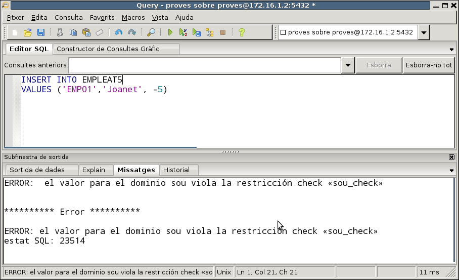
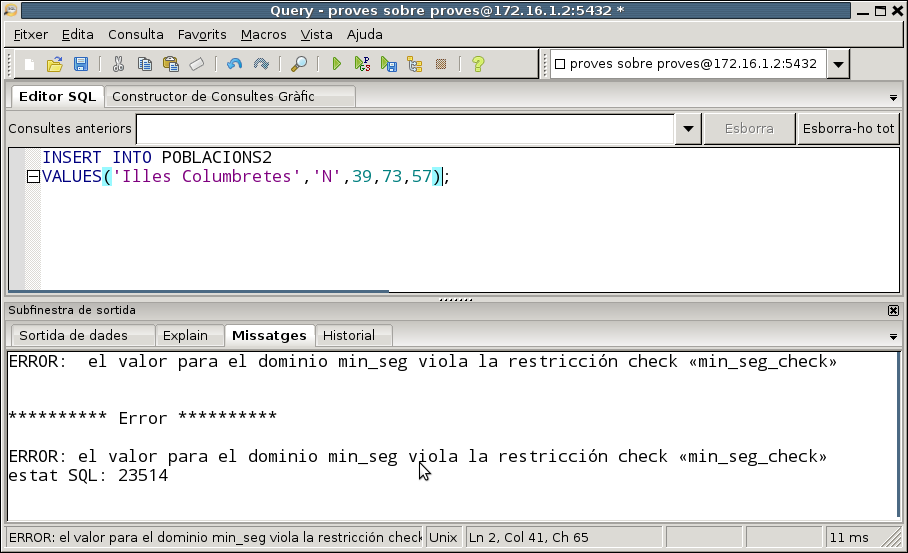
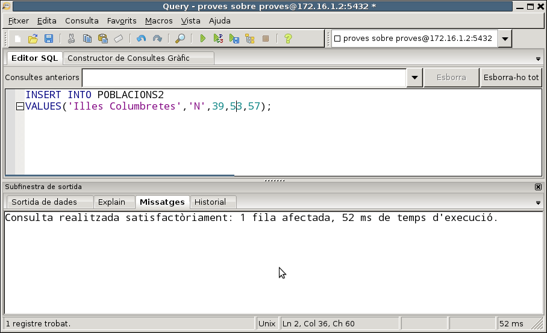

3.2.8.2 Dominis
Els dominis són els conjunts de valors que pot agafar un determinat camp. Habitualment es posa senzillament un tipus de dades. Però el model relacional teòric és més restrictiu, i els dominis encara podrien ser subconjunts d'aquestos tipus de dades.
Normalment aquestos subconjunts es realitzen per mig dels check, que permeten una regla de validació (una condició) per a donar les dades com a bones (per exemple, un sou sempre és positiu, per tant, a banda de fer que siga numèric podríem obligar a que fóra positiu).
PostgreSQL permet definir dominis, que seran d'un determinat tipus base, d'una grandària determinada (opcional), amb un valor per defecte (opcional) i fins i tot amb una clàusula check. A partir d'aquest moment, un o més d'un camp els podrem definir d'aquest domini (amb l'avantatge que canviant el domini canviem el tipus de tots els camps que el tenen).
Anem a veure alguns exemples que es poden realitzar sobre l'usuari proves.
CREATE DOMAIN sou AS numeric(7,2)
CHECK (VALUE > 0);
Si us dóna error perquè ja existia el domini, senzillament esborreu el domini anterior i ho torneu a provar
Ara podríem definir la taula:
CREATE TABLE EMPLEAT5
( cod_e varchar(5) primary key,
nom_e varchar(50),
salari sou);
Si intentem introduir la dada del sou malament (per exemple posant-lo negatiu) veurem que dóna error.

Un altre exemple, que farem sobre la Base de Dades proves, encara que és un exemple basat en les taules que teníem en geo.
En la taula de POBLACIONS tenim les coordenades (latitud i longitud). Podríem intentar fer uns dominis per a marcar l'hemisferi (N S per a latitud, i E W per a longitud), els graus de latitud (-90º a 90º), graus de longitud (-180º a 180º) en longitud, per als minuts (0' a 59') , segons (0” a 59”). Centrem-nos en la latitud:
CHECK (VALUE IN ('N','S'));
CREATE DOMAIN graus_lat AS numeric(2)
CHECK (VALUE BETWEEN 0 AND 90);
CREATE DOMAIN min_seg AS numeric(2)
CHECK (VALUE BETWEEN 0 AND 59);
Ara podríem definir una alternativa a la taula de POBLACIONS:
CREATE TABLE POBLACIONS2
( nom VARCHAR(50) CONSTRAINT cp_pob2 PRIMARY KEY,
lat_h hemi_lat,
lat_g graus_lat,
lat_m min_seg,
lat_s min_seg);
i comprovaríem que les latituds s'han d'introduir correctament. Si posem per exemple els minuts malament, dóna error
INSERT INTO POBLACIONS2
VALUES('Illes Columbretes','N',39,73,57);

Però no hi ha problema si les dades són correctes.
INSERT INTO POBLACIONS2
VALUES('Illes Columbretes','N',39,53,57);

Per a esborrar un domini, utilitzarem DROP DOMAIN.
DROP DOMAIN sou;
Si algun camp està definit amb el domini que esborrem, donarà error. Si esborràrem amb l'opció CASCADE, s'esborrarien els camps de les taules amb aquest domini. Per a deixar que els companys/es puguen treballar també, esborrem tot el que hem creat:
DROP TABLE EMPLEAT5;
DROP DOMAIN sou;
Encara no esborrem els dominis hemi_lat, graus_lat i min_seg, perquè els utilitzarem en la següent pregunta.
Llicenciat sota la Llicència Creative Commons Reconeixement NoComercial CompartirIgual 3.0